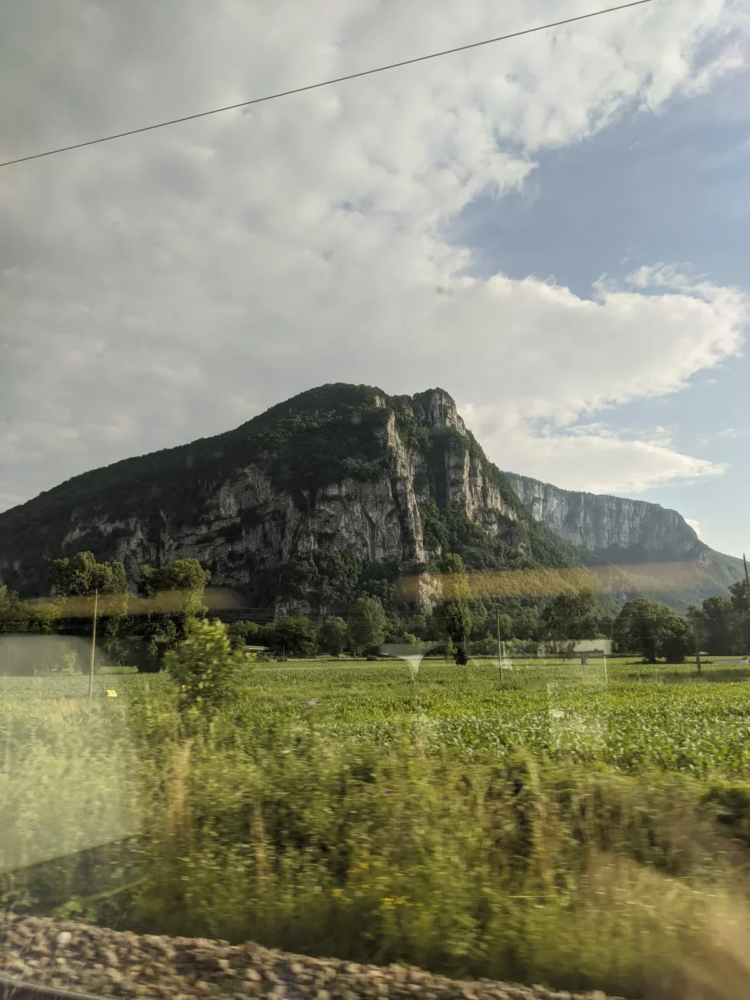
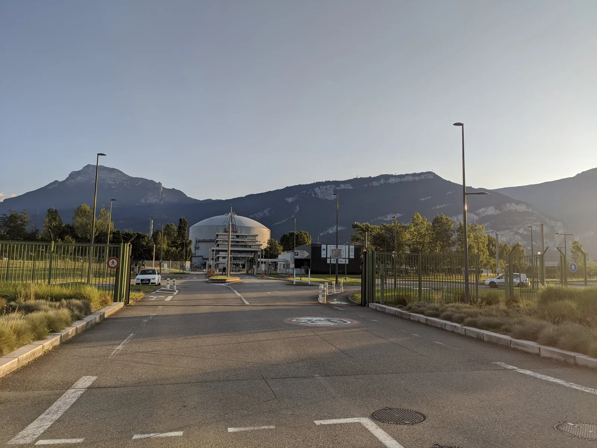
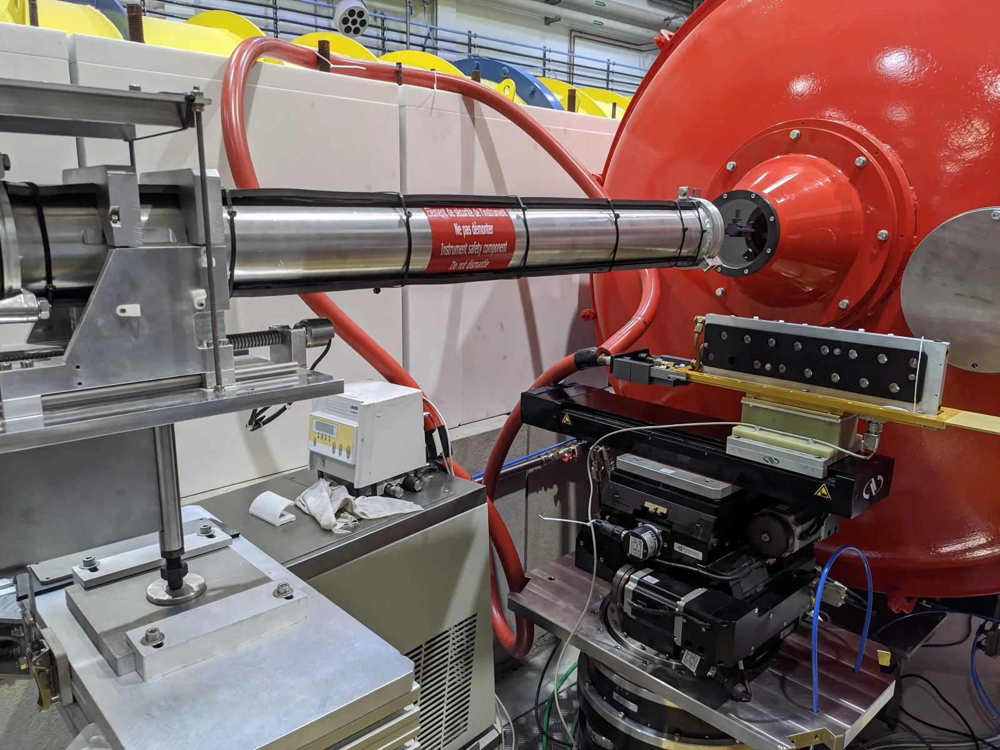
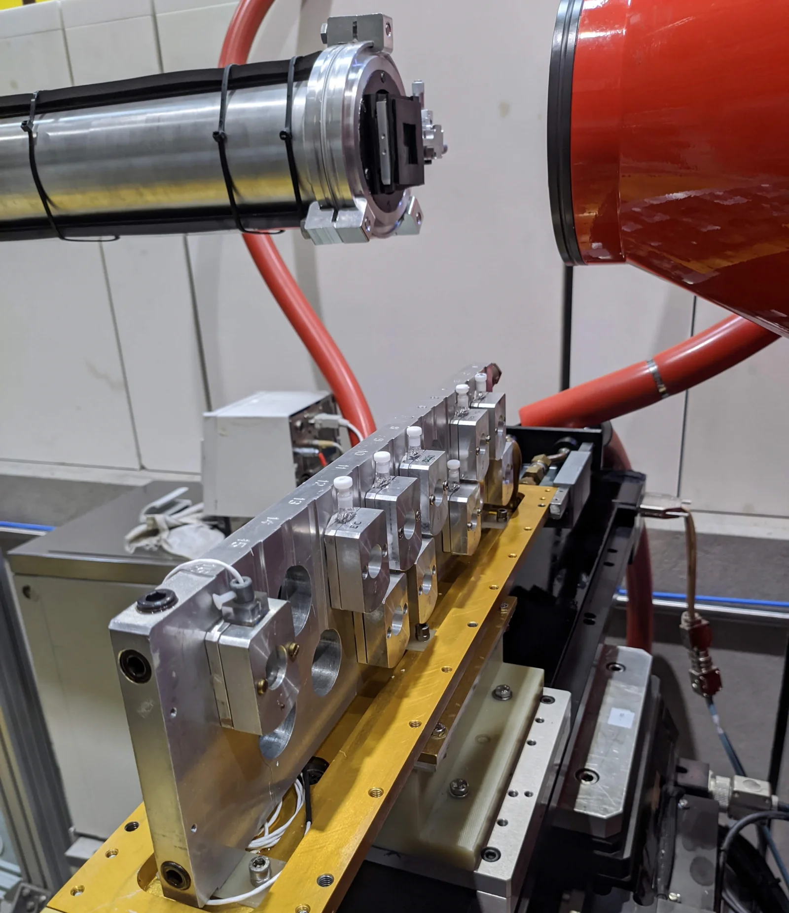
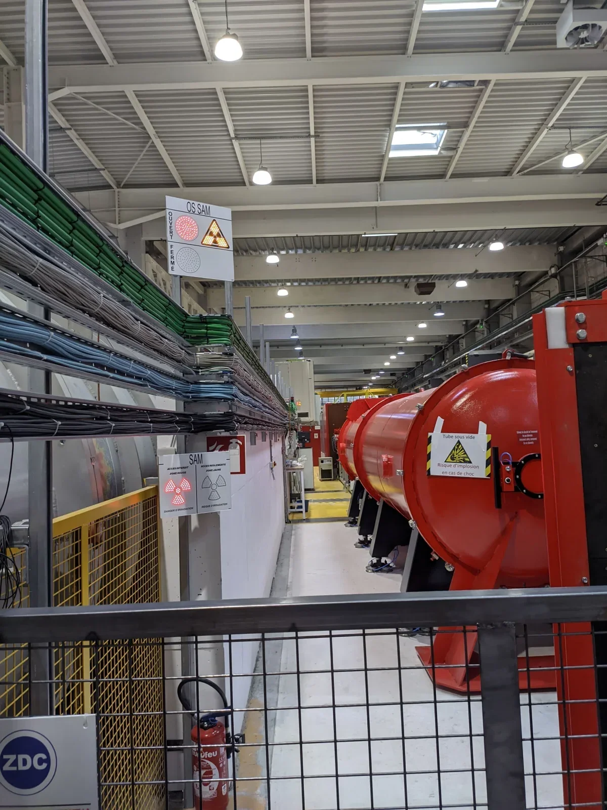
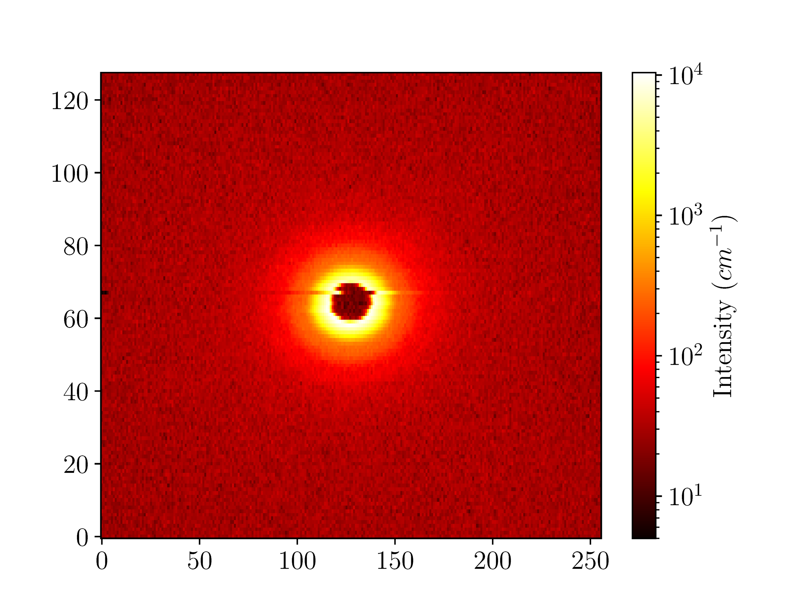
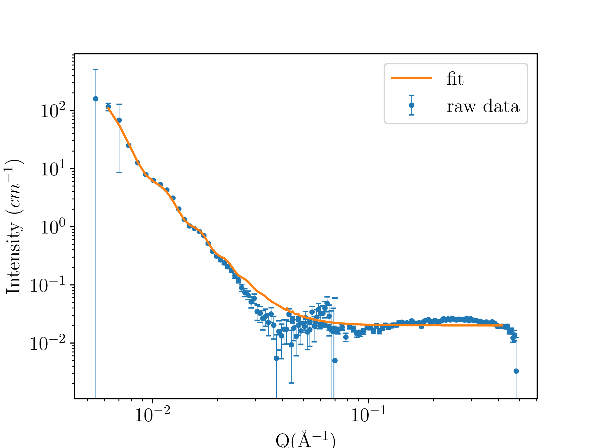

Y arriver
En juin 2024, j'ai participé à la Formation Annuelle à la Neutronique (FAN) organisée par la 2FDN et l'ILL à Grenoble. Le programme est généralement destiné aux doctorants et chercheurs permanents. Je commençais mon mémoire de Master au CEA Saclay, le seul étudiant de Master accepté cette année-là.
J'ai suivi le parcours matière molle et biophysique, axé sur la SANS et les techniques de spectroscopie. J'ai apporté des nanoparticules de silice de mon travail de mémoire, espérant vérifier directement leur taille.

Arrivée à Grenoble pour la formation FAN 2024
Jour 1 : Introduction et théorie
La matinée a couvert les méthodes de production de neutrons (réacteurs et sources de spallation), les propriétés de base des neutrons, et pourquoi les neutrons sont utiles pour la recherche sur la matière condensée. L'avantage clé est que les neutrons interagissent avec les noyaux atomiques plutôt qu'avec les nuages électroniques, ce qui permet de distinguer les isotopes, notamment l'hydrogène et le deutérium. Cela les rend précieux pour les études de matière molle où la substitution isotopique peut mettre en évidence des composants spécifiques.
Après le cours, nous avons visité les installations de l'ILL. L'échelle était frappante. Des dizaines d'instruments répartis sur plusieurs bâtiments, chacun conçu pour des mesures spécifiques : diffractomètres, spectromètres, instruments de diffusion aux petits angles. Le réacteur est au centre, envoyant des neutrons par des guides vers toutes les différentes lignes de faisceau.

L'installation de recherche neutronique de l'Institut Laue-Langevin à Grenoble
L'après-midi s'est divisé en parcours. Je suis allé en matière molle. Fabrice Cousin a présenté la théorie de la SANS : comment l'intensité de diffusion en fonction du transfert de moment donne des informations structurales via les transformées de Fourier. Les mathématiques étaient accessibles.
La session de spectroscopie qui a suivi était plus difficile à suivre. La salle était chaude (pas de climatisation en été) et les dérivations allaient vite. Mais l'idée principale est passée : mesurer le changement d'énergie des neutrons diffusés pour sonder la dynamique moléculaire.
Le dîner ce soir-là a aidé. Parler aux autres participants, doctorants et chercheurs permanents, tous là pour apprendre quelque chose en dehors de leur expertise habituelle, a rendu l'écart d'expérience moins pesant que prévu.
Jour 2 : Travaux pratiques SANS
Le deuxième jour était le TP de SANS sur l'instrument SAM, encadré par Nicolas Martin et Fabrice Cousin.
J'avais apporté des nanoparticules de silice de mon travail de mémoire, les mêmes que j'utilisais pour fabriquer des surfaces nano-texturées au CEA Saclay. Le fabricant spécifiait un diamètre de 100 nm, mais je ne l'avais jamais vérifié avec des neutrons.

L'instrument SAM (Small Angle Multi-detector) à l'ILL
Nous avons chargé les échantillons dans des cellules en quartz (le quartz a une faible absorption de neutrons, contrairement au verre borosilicaté utilisé pour les rayons X) et les avons montés dans le porte-échantillon. La mesure elle-même était rapide : régler la distance du détecteur, configurer le temps d'acquisition et démarrer. En quelques minutes, le motif de diffusion est apparu à l'écran, confirmation que tout était correctement configuré.

Porte-échantillon prêt pour la mesure SANS
Nous avons programmé l'instrument pour passer en revue les échantillons de tout le monde pendant la nuit. Chaque participant avait apporté quelque chose de différent : micelles de polymères, bicouches, mes nanoparticules. Au matin, nous aurions des données à analyser.
Tous les échantillons n'étaient pas idéaux. Un participant avait oublié de deutérer son échantillon, ce qui signifiait un mauvais contraste entre les composants. Un autre échantillon s'est révélé instable sous le faisceau de neutrons. Nous les avons chargés quand même. Nous verrions à quoi ça ressemble dans les données.

L'instrument en fonctionnement pendant l'acquisition de données
Jour 3 : Analyse de données
Jeudi matin était consacré à l'analyse de données. Nous avons travaillé sur les étapes de traitement : soustraire le bruit de fond, corriger l'efficacité du détecteur, normaliser par la transmission, ajuster des modèles structuraux.
Regarder Fabrice analyser différents échantillons était instructif. Certains montraient des oscillations de facteur de forme propres. D'autres avaient de la diffusion multiple à cause d'une concentration élevée, nécessitant un raccordement soigneux entre les configurations de détecteur. Chaque système demandait des corrections différentes : soustraction du bruit de fond incohérent, gestion de la diffusion multiple, traitement des échantillons qui se comportaient mal sous le faisceau.

Données brutes de diffusion SANS des nanoparticules de silice
Puis il a ajusté mes données de nanoparticules avec un modèle de sphère.
Résultat : 106 nm ± 8 nm.
La spécification du fabricant était 100 nm. Mes mesures SAXS au CEA Saclay avaient donné 106,2 ± 8,5 nm. Deux techniques indépendantes, même réponse. Cela validait ce que j'avais supposé pour mon mémoire, une confirmation utile même si pas strictement nécessaire.
Les deux échantillons problématiques du Jour 2 se sont comportés comme prévu, c'est-à-dire mal. L'échantillon non deutéré ne montrait presque aucun contraste ; celui qui sédimentait donnait une diffusion incohérente. Ce n'était pas prévu comme un exercice pédagogique, mais c'en est devenu un : la préparation et la stabilité des échantillons comptent avant même de commencer une mesure.
J'avais un train pour Paris cet après-midi-là, donc nous n'avons couvert que les bases. Pas idéal, mais suffisant pour voir le flux de travail complet de la mesure au résultat.

Ajustement d'un modèle sphérique aux données SANS expérimentales montrant la détermination de la taille des particules
Ce que j'en retiens
La formation a relié théorie, mesure et analyse sur un instrument en fonctionnement. C'est plus difficile à obtenir à partir d'articles seuls.
J'ai maintenant une idée plus claire de quand la SANS est le bon outil, notamment pour les systèmes où le contraste isotopique compte, et quand la SAXS suffit. La spectroscopie était plus difficile à assimiler dans le temps imparti, mais je comprends ce qu'elle mesure et peux lire la littérature de façon plus critique.
Être le plus jeune participant comptait moins que ce que j'avais craint. Tout le monde apprenait quelque chose en dehors de son travail habituel. Trois jours ce n'est pas long, mais cela m'a montré à quoi ressemble le travail dans une grande infrastructure.
Je veux y retourner un jour, avec ma propre demande de temps de faisceau.
Remerciements
- 📚 2FDN et ILL – Pour l'organisation du programme FAN
- 👨🏫 Fabrice Cousin et Nicolas Martin – Pour nous avoir guidés à travers la mesure et l'analyse SANS
- 👥 Les autres participants – Pour les échanges et pour avoir si bien accueilli un étudiant de Master